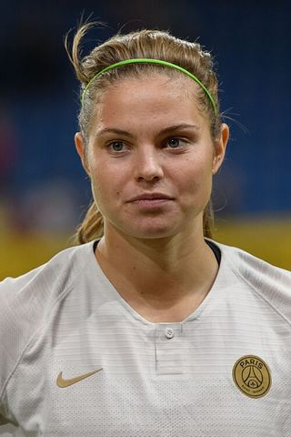

Ezzcoins › Player pages › Signe Bruun
80
ST

Bruun
PAC56
SHO83
PAS66
DRI75
DEF45
PHY74
Photo (cropped): Granada · CC BY-SA 4.0 · Wikimedia Commons
Photo source
https://commons.wikimedia.org/wiki/File:20180912_UEFA_Women%27s_Champions_League_2019_SKN_-_PSG_Signe_Bruun_850_5437.jpg
Licence: https://creativecommons.org/licenses/by-sa/4.0
Signe Bruun
80 ST · Real Madrid · Liga F Moeve ·  Denmark
Denmark
No console price yet. Add this player to your watchlist on Ezzcoins: the most-watched players get a price every hour.
71Meta rating · ST −9 vs overall · CAM 71
PAC56
SHO83
PAS66
DRI75
DEF45
PHY74
- Position
- ST (also CAM)
- Club
- Real Madrid
- League
- Liga F Moeve
- Nation
- Denmark
- Skill moves
- 3★
- Weak foot
- 3★
- Preferred foot
- Right
- Football
- Women's football
Meta rating: Ezzcoins' own estimate of how well this card plays in game, worked out from its stats for each position it can play, its skill moves, weak foot and PlayStyle+. An average card scores about its overall rating; higher means it plays above its rating.
Watch on EzzcoinsMore from Real Madrid
- 91
 Kylian MbappéST
Kylian MbappéST - 90
 Jude BellinghamCAM
Jude BellinghamCAM - 90
 Thibaut CourtoisGK
Thibaut CourtoisGK - 89
 Vini Jr.LW
Vini Jr.LW - 87
 Federico ValverdeCM
Federico ValverdeCM - 86
 CucurellaLB
CucurellaLB - 85
 Linda CaicedoLW
Linda CaicedoLW - 84AtheneaRW